树莓派GPIO入门09-使用MAX7219芯片驱动8位数码管
前面几篇我们学习了如何利用一片或多片级联的74HC595芯片来驱动显示数码管的方法。最开始我们提出的两个问题：
- 占用IO口过多
- 做动态扫描时占用CPU资源太多导致显示不稳定
第一个问题已经利用级联的74HC595解决了。（不管驱动几只数码管，只用3个IO即可）
但第二个问题依然存在，树莓派仍然需要不停地访问IO口进行动态扫描。
好，既然动态扫描占用CPU资源太多，那这活儿咱包出去让别人干不就行了？这就是本文主角MAX7219的特长，动态扫描这活儿MAX7219全包了，干的还比咱自己干得还好，一片MAX7219可最多支持显示8位8段数码管，还支持各种设置如亮度设置扫描位数设置等。而我们只用告诉它显示的内容就行了。
最终效果
视频演示
硬件
- MAX7219显示芯片 X 1（2到3元一个）
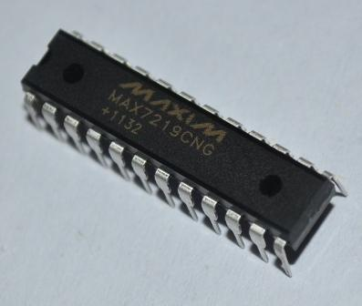 - 共阴（共阳不可以）4位数码管 X 2
- 10k电阻一只
- 10uF电容一只
- 0.1uF电容一只
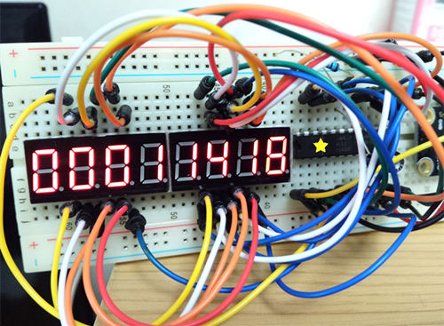
原理说明 未完TODO
注：下面这些图都是从MAX7219官方资料里截取出来的，官方资料文末提供下载
- 先看一下MAX7219的引脚图：
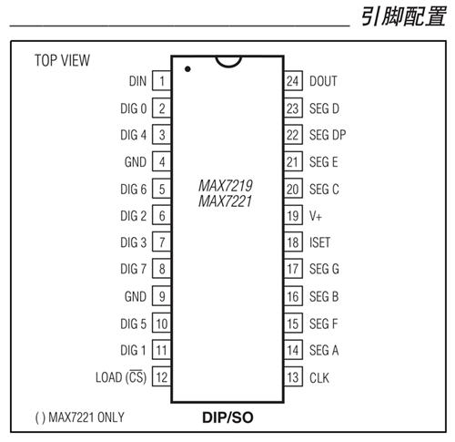
MAX7219一共有24根引脚，这里面有一些跟74HC595的引脚功能类似的引脚如下：
| MAX7219 | 74HC595 | 功能 |
|---|---|---|
| DIN | DS | 串行输入 |
| SEG A-G,DP | Q0-Q7 | 数码管段数据输出 |
| CLK | SHCP | 串行移位寄存器时钟 |
| LOAD | STCP | 内部寄存器锁存时钟 |
| DOUT | Q7S | 串行输出，级联多块芯片时使用 |
可以看出，MAX7219跟74HC595一样也是通过DIN引脚串行输入数据，在CLK引脚的上升沿移入移位寄存器，在LOAD引脚的上升沿将位移寄存器的数据复制到内部的各种寄存器里。不同的是:
- 74HC595的移位寄存器是8位的，而MAX7219的移位寄存器是16位的，每次串行输入数据需要连续输入16位数据。
- 74HC595内部只有1个8位的锁存器，功能很简单，只是原样输出到8根输出引脚。而MAX7219内部有好几个不同功能的寄存器。后面我会逐个说明。
我们再看一下官方文档里关于各引脚的功能说明：
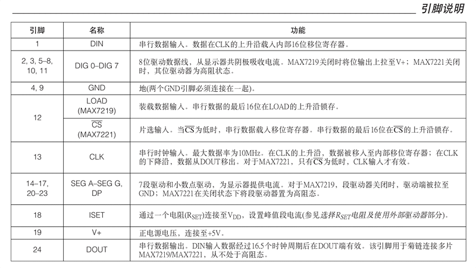
上面提过的不再赘述，说一下MAX7219特有的引脚。- DIG0-DIG7这8个引脚作为位选端，分别连到8位数码管的共阴极，MAX7219在做动态扫描时会依次向共阴极DIG0-DIG7输出低电平，所以MAX7219不能驱动共阳极的数码管。其实也不是绝对不能，将位选端和段选端逆接就可以了，不过这样做的话，有3个弊端：
- 不能使用MAX7219内部的译码功能，需要自己编写数字的字形码。增加了代码的复杂度。
- 需要以段单位来传输数据，而不能以位单位来传输数据。（即每次传输的是各位数码管的某一段的数据，而不是某位数码管各段的数据。第一次传所有数码管的A段数据，第二次传所有数码管的B段数据一直到8段数据全部传完）无疑进一步增加了代码的复杂度。
- 无法限制扫描位数，只能所有8位数码管同时扫描。（变成了限制扫描段数，如可以只显示所有数码管的A-C段。。。）
- ISET通过一只电阻连上VCC，通过调整这只电阻的阻值可以调整通过这只电阻的电流I，而最后输出到数码管上的最大电流就是这个电流I的100倍。如果这只电阻太小，导致输出到数码管的电流过大会烧坏数码管，所以官方文档里推荐这只电阻最小应该设置为9.7K欧，我手头上只有10K的电阻也是一样，只要别低于这个阻值就可以了。根据这个原理我们也可以接一个可调电阻在ISET上，可以随时调整数码管亮度。这种调整亮度的方法是通过模拟信号调制。MAX7219也支持通过数字信号来设置亮度（有16级亮度可调）。
- DIG0-DIG7这8个引脚作为位选端，分别连到8位数码管的共阴极，MAX7219在做动态扫描时会依次向共阴极DIG0-DIG7输出低电平，所以MAX7219不能驱动共阳极的数码管。其实也不是绝对不能，将位选端和段选端逆接就可以了，不过这样做的话，有3个弊端：
MAX7219内部的各模块的示意图：
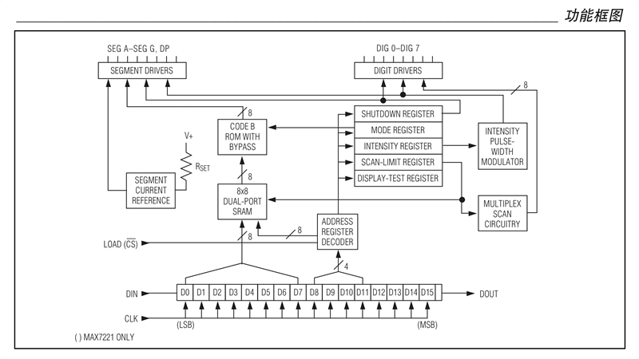
最下面是一个16位的移位寄存器D0-D15，跟74HC595一样，通过DIN引脚串行输入数据，在CLK引脚的上升沿移入移位寄存器。
D8-D11这4位数据用来指定内部寄存器地址。D0-D7是具体要传到寄存器里的数据。
上面的图看上去有点复杂，其实简单地说就是我们每次要串行传输16位数据进去，然后在LOAD的上升沿，根据D8-D11指定的寄存器地址，将D0-D7存放在指定的寄存器里。这样多次传输数据就可以给所有的寄存器设值了。
下面是MAX7219内部的寄存器一览：- 关断寄存器
- 译码模式寄存器
- 亮度寄存器
- 扫描限值寄存器
显示器测试寄存器
每个寄存器都有自己特殊的功能，后面我们会逐一介绍。
串行传输时的数据格式如下：
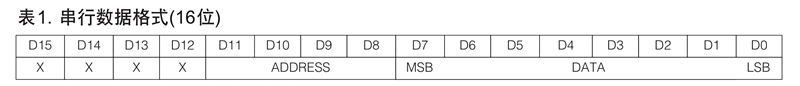
你可能注意到了这幅图的顺序跟模块示意图里移位寄存器的顺序是相反的。
D15-D0这个反向的顺序是你写代码时串行传输数据时的顺序，先传D15的数据，再传D14,D13…D0，这样传输完成后。实际的数据顺序就变成了D0,D1,D2…D15。为了便于编码，除了模块示意图是按实际顺序记载的，后面所有数据格式的示意图都是倒序记载的。各寄存器地址如下：
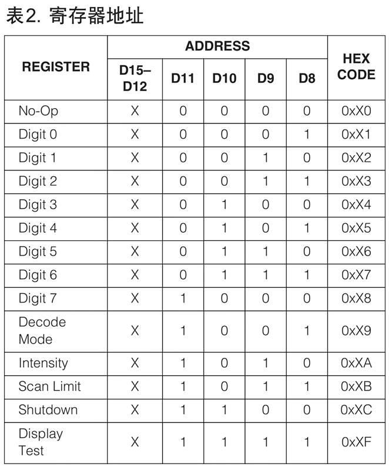
关断寄存器的数据格式：
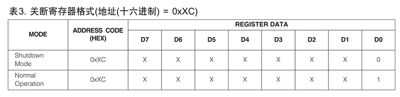译码模式寄存器的数据格式：
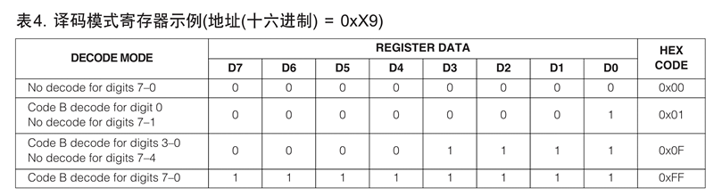译码模式下的原码和译码的对应表：
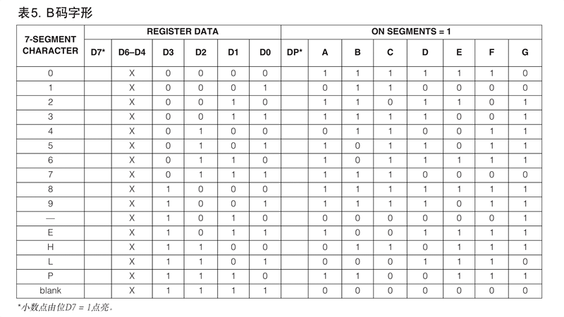非译码模式下的数据和数码管各段的对应表：
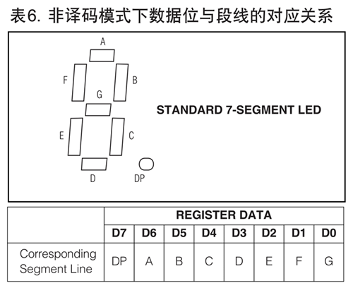亮度寄存器的数据格式：
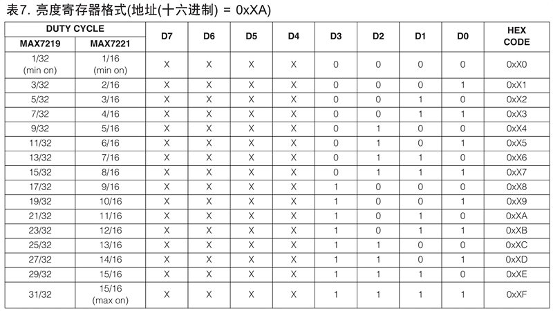扫描限值寄存器的数据格式：
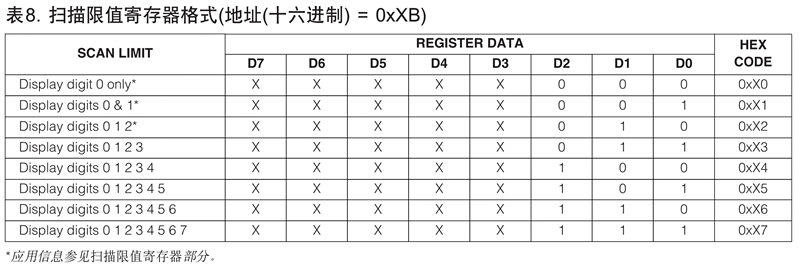显示器测试寄存器的数据格式：
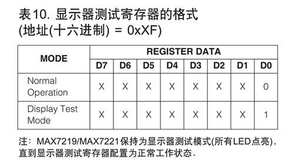
硬件连接TODO
| 模块1 | 引脚 | 模块2 | 引脚 |
|---|---|---|---|
| MAX7219 | DIN | 树莓派 | GPIO13 |
| MAX7219 | LOAD | 树莓派 | GPIO26 |
| MAX7219 | CLK | 树莓派 | GPIO19 |
| MAX7219 | GNDX2 | 树莓派 | GND |
| MAX7219 | V+ | 树莓派 | 5V |
| MAX7219 | ISET | 树莓派 | 5V(需串联一只10k电阻) |
| MAX7219 | DIG0 | 数码管1 | DIG1(引脚12) |
| MAX7219 | DIG1 | 数码管1 | DIG2(引脚9) |
| MAX7219 | DIG2 | 数码管1 | DIG3(引脚8) |
| MAX7219 | DIG3 | 数码管1 | DIG4(引脚6) |
| MAX7219 | DIG4 | 数码管2 | DIG1(引脚12) |
| MAX7219 | DIG5 | 数码管2 | DIG2(引脚9) |
| MAX7219 | DIG6 | 数码管2 | DIG3(引脚8) |
| MAX7219 | DIG7 | 数码管2 | DIG4(引脚6) |
| MAX7219 | SEG DP | 数码管1/2 | DP |
| MAX7219 | SEG G | 数码管1/2 | G |
| MAX7219 | SEG F | 数码管1/2 | F |
| MAX7219 | SEG E | 数码管1/2 | E |
| MAX7219 | SEG D | 数码管1/2 | D |
| MAX7219 | SEG C | 数码管1/2 | C |
| MAX7219 | SEG B | 数码管1/2 | B |
| MAX7219 | SEG A | 数码管1/2 | A |
| MAX7219 | DOUT | (级联用) | (不使用) |
| 10/0.1uF电容 | 正极 | MAX7219 | V+ |
| 10/0.1uF电容 | 负极 | MAX7219 | GND |
代码（Python）
1 | #!/usr/bin/env python |